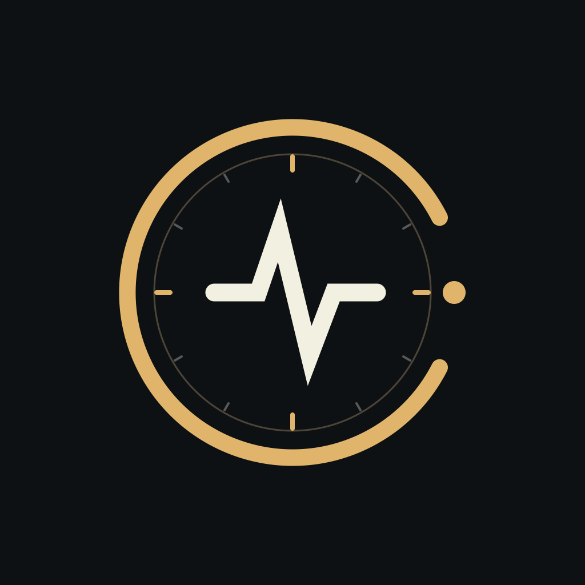

Mechanische Uhren verstehen
Höre deiner Uhr zu.
Gangabweichung, Abfallfehler und Amplitude. Eine Zeitwaage für das iPhone, die ihre Messungen direkt auf deinem Gerät verarbeitet.
Geplant: 29,99 € als Einmalkauf im deutschen Store. Alle Funktionen enthalten. Kein Abo, kein Konto.
Eine Messung. Ein klarer Überblick.
Lege deine Uhr an, bestätige den Hebewinkel und starte eine Aufnahme. Wähle 30, 60 oder 90 Sekunden. Signalstabilität und Messdetails helfen dir, das Ergebnis einzuordnen.
- Einzelmessungen und geführte Berichte für sechs Uhrenlagen
- Lokaler Messverlauf, Vergleich und PDF-/CSV-Export
- Deutsch und Englisch, Dark Mode und Bedienungshilfen
- Klar gekennzeichnetes digitales Beispiel zum Kennenlernen
Nachvollziehbare Ergebnisse
Version 1 unterstützt Schweizer Ankerhemmungen. Für die Amplitude ist der richtige Hebewinkel notwendig. Sind die akustischen Ereignisse nicht eindeutig, bleibt der betroffene Wert leer. Die tatsächliche Genauigkeit an echten Uhren ist nicht durch einen Vergleich mit einem Referenzgerät belegt; eine garantierte Messgenauigkeit wird nicht zugesagt.
Listen. Measure. Compare.
A timing instrument for your iPhone.
Escapement analyzes rate, beat error and amplitude for mechanical watches with Swiss-lever escapements. Keep a private watch collection, compare measurements and export reports. Processing stays on your device.
Preparing for the App Store. Planned as one paid download with every feature included. No account or subscription. Real-watch accuracy has not been established against a reference timegrapher.